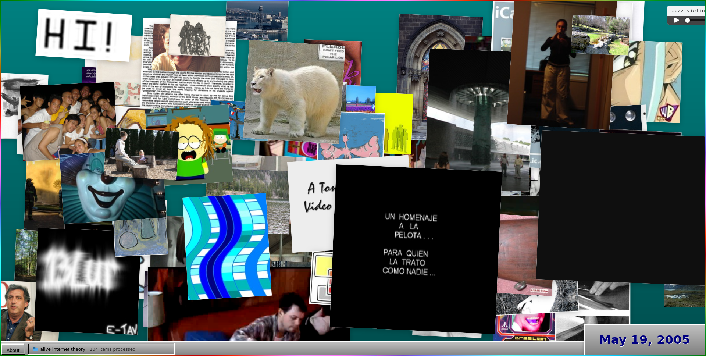

A Teoria da Internet Viva
non-tech webA popularidade da teoria da internet morta tem aumentado nos últimos tempos. Talvez já faça até parte da cultura pop.
É realmente tentador acreditar que são só robôs gerando e consumindo todo o conteúdo que existe se você só frequenta a web dos jardins murados, das timelines com curadoria algorítmica e do slop.
Na realidade, até para quem ativamente tenta se manter longe dessa web é possível dar algum crédito à teoria. Tirei o meu site do GitHub Pages e estou aprendendo o nome de vários bots diferentes a cada nova olhada nos logs do meu servidor1.
Mas aí lembro da Federação, da Indie/Small Web, dos e-mails que recebo de vez em quando e das citações aleatórias ao Crie a Porra de um Blog que vez ou outra aparecem.
A web está vivona, bem vivona, você só precisa procurar nos cantos certos. Talvez seja até possível dizer que a maior parte da web esteja morta - ou coisa pior - e que o que há de vivo são uns poucos povoamentos humanos, algo meio The Walking Dead2. Se assim for, tudo bem. Ainda há vida e possibilidades de contatos com pessoas incríveis na web. Acho que devemos aproveitar. 😊
Acho mais do que isso, acho que podemos propalar uma Teoria da Internet Viva. Em vários cantos da web existe gente do outro lado, de todo tipo. E isso é do caralho.

Captura do Alive Internet Theory, de Spencer Chang
Esse post foi inspirado pelo Alive Internet Theory, uma obra encomendada pelo Internet Archive para celebrar a marca da trilionésima página arquivada por eles. Há outras obras.
-
Fora os Malandrilsons tentando baixar arquivos
.envou achando que sou um roteador vulnerável. ↩︎ -
Não sei bem se estou usando essa referência corretamente. Nunca li The Walking Dead. Pelo que ouço falar, há zumbis e comunidades vivas isoladas tentando sobreviver. É isso? ↩︎